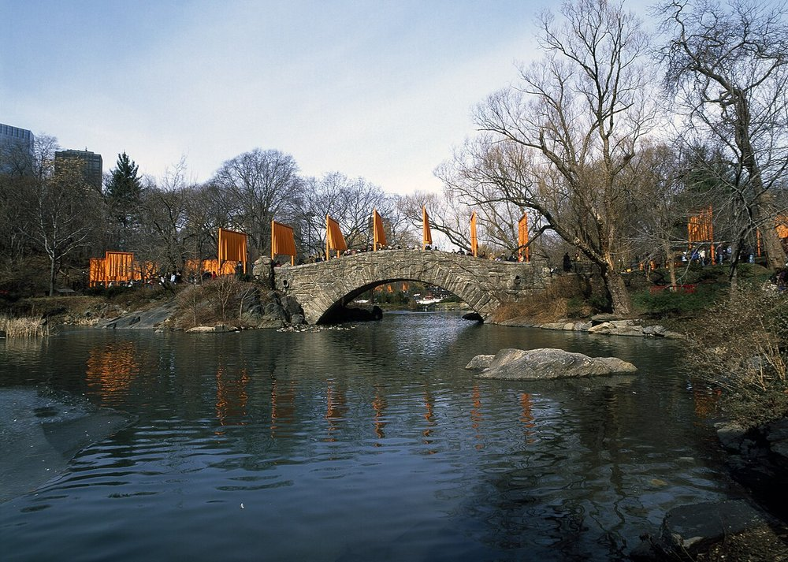

The Gates
Christo and Jeanne-Claude · 1979–2005 · Steel, vinyl tubing and nylon fabric
In copyright. Look and learn: shown for study, not for download. · Photo: Carol M. Highsmith, Library of Congress
The artists installed 7,503 steel gates along 23 miles of paths in Central Park, each hung with a panel of saffron-colored nylon, from February 12 to February 27, 2005. They had first proposed the project in 1979. The steel bases rested on the walkways without being attached, so that no holes were drilled in the park. The artists sold their own work, including preparatory drawings, to finance it, and said that it cost $21 million.